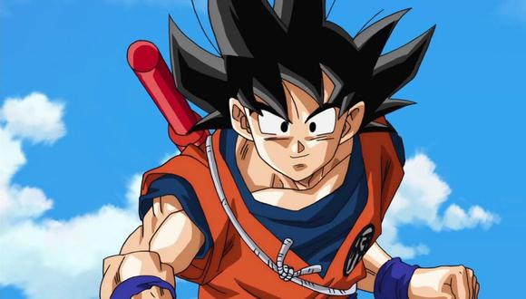

Son Goku

Son Goku (孫そん悟ご空くう, Son Gokū, Sūn Wùkōng), conocido como Gokú en Hispanoamérica, es el protagonista principal del manga y anime de Dragon Ball creado por Akira Toriyama. Su nombre real y de nacimiento es Kakarotto (カカロット, Kakarotto «Kacarrot» en saiyano.png en alfabeto saiyano) y es uno de los pocos saiyanos que lograron sobrevivir a la destrucción total del Planeta Vegeta del Universo 7. Es el segundo hijo de Bardock y Gine, hermano menor de Raditz, nieto adoptivo de Son Gohan, esposo de Chi-Chi, padre de Son Gohan y Son Goten, a su vez también es el abuelo de Pan y ancestro de Son Goku Jr.
Regresar